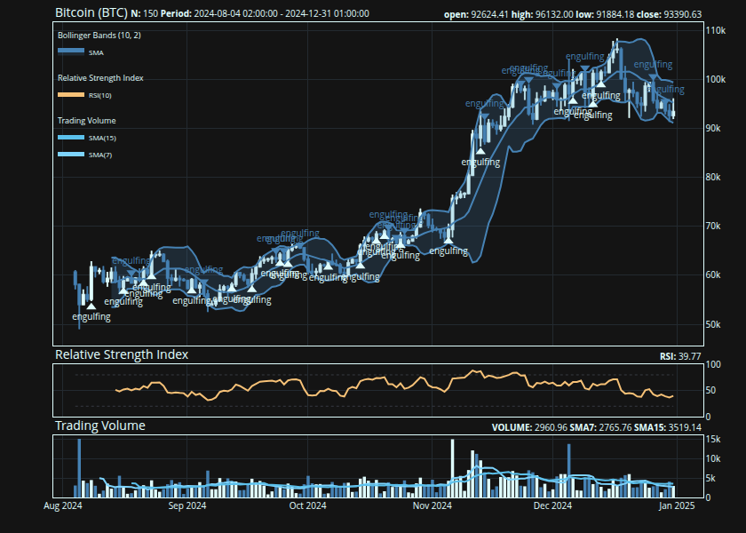
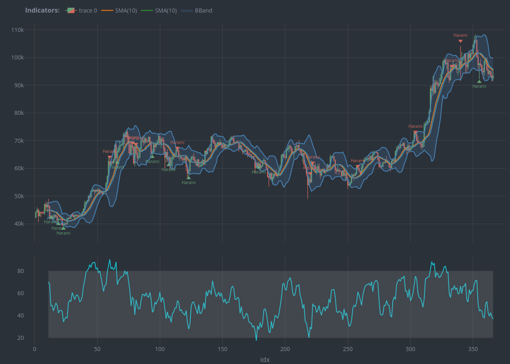
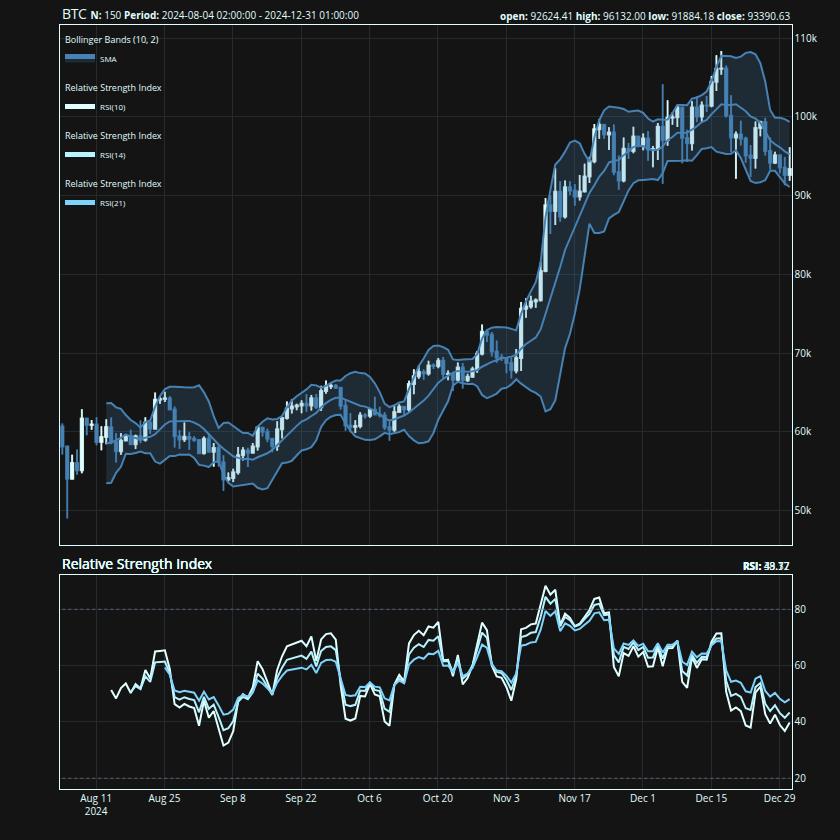
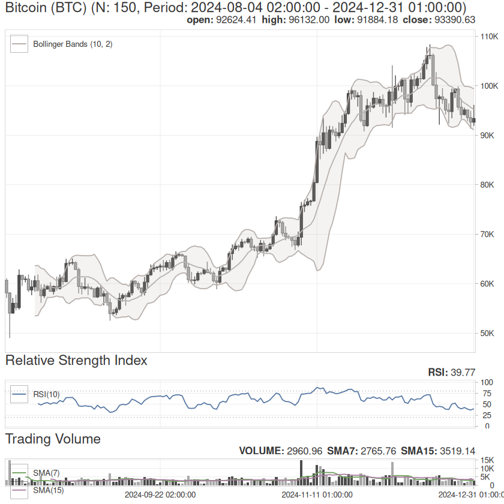

{talib} is an R package for technical analysis, candlestick pattern recognition, and interactive financial charting—built on the TA-Lib C library. It provides 67 technical indicators, 61 candlestick patterns, and a composable charting system powered by {plotly} and {ggplot2}. All indicator computations are implemented in C via .Call() for minimal overhead.
Alongside {TTR}, {talib} adds candlestick pattern recognition and interactive charts to the R technical analysis ecosystem.
{
## create a candlestick chart
talib::chart(BTC, title = "Bitcoin (BTC)")
## overlay Bollinger Bands on
## the price panel
talib::indicator(talib::bollinger_bands)
## mark Engulfing candlestick
## patterns on the chart
talib::indicator(talib::engulfing, data = BTC)
## add RSI and volume as
## separate sub-panels
talib::indicator(talib::RSI)
talib::indicator(talib::trading_volume)
}
Indicators
Every indicator follows the same interface: pass an OHLCV data.frame or matrix and get the same type back. The return type always matches the input.
## compute Bollinger Bands
## on BTC OHLCV data
tail(
talib::bollinger_bands(BTC)
)
#> UpperBand MiddleBand LowerBand
#> 2024-12-26 01:00:00 100487.38 96698.61 92909.83
#> 2024-12-27 01:00:00 100670.65 96512.96 92355.27
#> 2024-12-28 01:00:00 100632.13 96581.91 92531.69
#> 2024-12-29 01:00:00 99628.77 95576.60 91524.43
#> 2024-12-30 01:00:00 96403.53 94231.31 92059.09
#> 2024-12-31 01:00:00 95441.13 93774.23 92107.34Candlestick Patterns
{talib} recognizes 61 candlestick patterns—from single-candle formations like Doji and Hammer to multi-candle patterns like Morning Star and Three White Soldiers. Each pattern returns a normalized score: 1 (bullish), -1 (bearish), or 0 (no pattern).
Charts
Charts are built in two steps: chart() creates the price chart, then indicator() layers on technical indicators. Overlap indicators (moving averages, Bollinger Bands) draw on the price panel; oscillators (RSI, MACD) get their own sub-panels.
{
## price chart with two moving
## averages and MACD below
talib::chart(BTC)
talib::indicator(talib::SMA, n = 7)
talib::indicator(talib::SMA, n = 14)
talib::indicator(talib::MACD)
}
Multiple indicators can share a sub-panel by passing them as calls:
{
talib::chart(BTC)
talib::indicator(talib::BBANDS)
## pass multiple calls to combine
## them on a single sub-panel
talib::indicator(
talib::RSI(n = 10),
talib::RSI(n = 14),
talib::RSI(n = 21)
)
}
The charting system ships with 5 built-in themes inspired by chartthemes.com: default, hawks_and_doves, payout, tp_slapped, and trust_the_process. Switch themes with set_theme(). Both {plotly} (interactive, default) and {ggplot2} (static) backends are supported:
{
## switch to ggplot2 backend with
## the "Hawks and Doves" theme
talib::set_theme("hawks_and_doves")
talib::chart(BTC, title = "Bitcoin (BTC)")
talib::indicator(talib::BBANDS)
talib::indicator(talib::RSI)
talib::indicator(talib::trading_volume)
}
Column selection
Indicators use the columns they need automatically. When your data has non-standard column names, remap them with formula syntax:
## remap 'price' to the close column
talib::RSI(x, cols = ~price)
## remap hi, lo, last to high, low, close
talib::stochastic(x, cols = ~ hi + lo + last)Naming
Functions use descriptive snake_case names, but every function is aliased to its TA-Lib shorthand for compatibility with the broader ecosystem:
| Category | TA-Lib (C) | {talib} | {talib} alias |
|---|---|---|---|
| Overlap Studies | TA_BBANDS() |
bollinger_bands() |
BBANDS() |
| Momentum Indicators | TA_CCI() |
commodity_channel_index() |
CCI() |
| Volume Indicators | TA_OBV() |
on_balance_volume() |
OBV() |
| Volatility Indicators | TA_ATR() |
average_true_range() |
ATR() |
| Price Transform | TA_AVGPRICE() |
average_price() |
AVGPRICE() |
| Cycle Indicators | TA_HT_SINE() |
sine_wave() |
HT_SINE() |
| Pattern Recognition | TA_CDLHANGINGMAN() |
hanging_man() |
CDLHANGINGMAN() |
## snake_case and TA-Lib aliases
## are identical
all.equal(
target = talib::bollinger_bands(BTC),
current = talib::BBANDS(BTC)
)
#> [1] TRUEInstallation1
Install the release version from CRAN:
install.packages("talib")Install the development version from GitHub:
pak::pak("serkor1/ta-lib-R")Aggressive optimizations
Unknown flags passed to configure are forwarded verbatim to both the CMake build of the vendored TA-Lib and the R wrapper compile step. Rebuild from source with any compiler flags you like:
install.packages(
"talib",
type = "source",
configure.args = "-O3 -march=native"
)Or from a local clone:
git clone --recursive https://github.com/serkor1/ta-lib-R.git
cd ta-lib-R
R CMD INSTALL . --configure-args="-O3 -march=native"Code of Conduct
Please note that {talib} is released with a Contributor Code of Conduct. By contributing to this project, you agree to abide by its terms.